Đánh giá tổng quan: Nhà Hàng Ngon nổi tiếng với không gian
sang trọng và thực đơn đa dạng các món ăn Việt Nam. Đây là nơi
lý tưởng để thưởng thức các món ăn đặc trưng từ Bắc đến Nam,
như phở, bún chả, nem nướng. Chất lượng món ăn ổn định, phù
hợp cho các buổi gặp mặt bạn bè, gia đình hoặc khách du lịch
muốn khám phá ẩm thực Việt Nam.
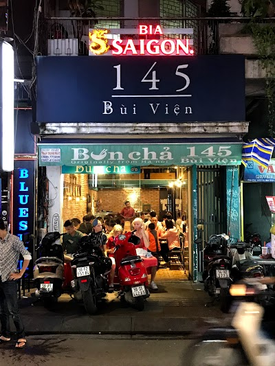
Bún Chả 145 Bùi Viện
Địa chỉ: 145 Bùi Viện, Quận 1, TP. Hồ Chí Minh
Giá: 40,000 - 80,000 VND/món
Đánh giá tổng quan: Đây là quán ăn nổi tiếng chuyên phục vụ
bún chả, một món ăn đặc sản của Hà Nội. Món bún chả ở đây được
đánh giá ngon, với thịt nướng thơm lừng và nước mắm pha vừa
miệng. Quán khá đông khách, đặc biệt vào buổi tối, nên sẽ có
đôi chút chờ đợi. Tuy nhiên, chất lượng món ăn đáng để thử.
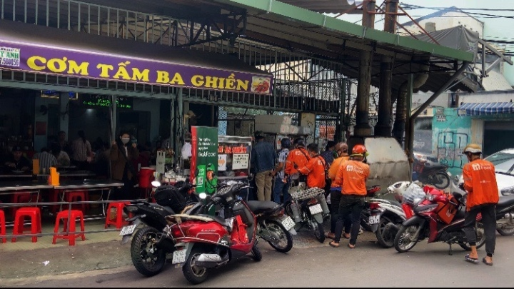
Cơm Tấm Ba Ghiền
Địa chỉ: 84E Trương Định, Quận 1, TP. Hồ Chí Minh
Giá: 50,000 - 120,000 VND/món
Đánh giá tổng quan: Cơm Tấm Ba Ghiền là một trong những quán
cơm tấm nổi tiếng ở TP. Hồ Chí Minh. Các món cơm tấm ở đây rất
ngon, với sườn nướng mềm, gia vị đậm đà và nước mắm pha ngon.
Quán tuy đơn giản nhưng rất đông khách và thường xuyên được
đánh giá cao về chất lượng.
Đánh giá tổng quan: The Deck Saigon là nhà hàng sang trọng nằm
bên sông Sài Gòn, mang đến không gian thư giãn và lãng mạn,
rất thích hợp cho các bữa tiệc hoặc hẹn hò. Thực đơn đa dạng
từ các món Âu, Á đến hải sản tươi ngon. Nhân viên phục vụ
chuyên nghiệp và không gian bên ngoài rất thoáng mát, tuyệt
vời cho các buổi tối lãng mạn.
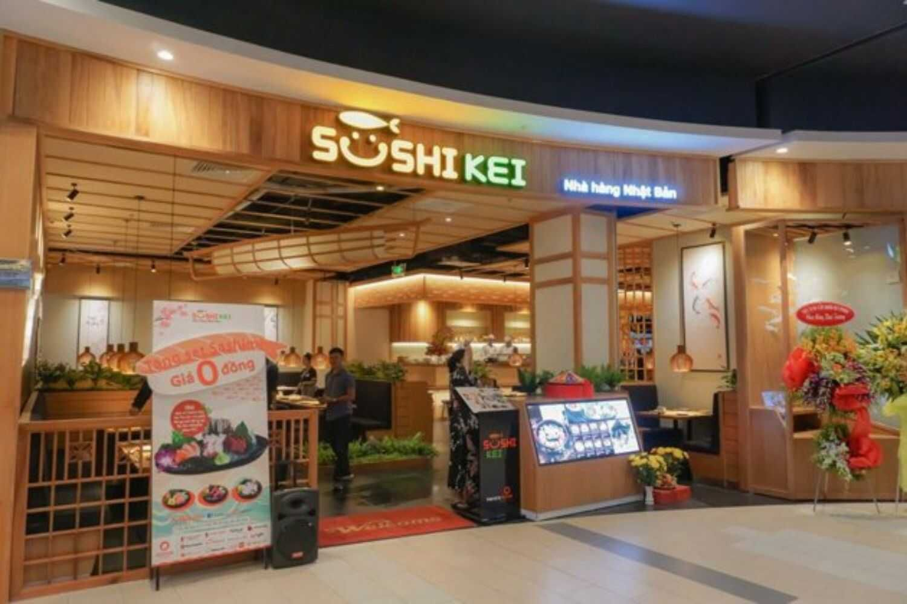
Sushi Kei
Địa chỉ: 4 Nguyễn Đức Cảnh, Thảo Điền, Quận 2, TP.HCM
Giá tham khảo: 150.000 - 300.000 VND/người
Thời gian hoạt động: 10:30 - 22:00
Đánh giá tổng quan: Sushi Kei là một nhà hàng Nhật Bản có
không gian ấm cúng và thoải mái. Quán nổi tiếng với các món
sushi tươi ngon, sashimi và các món ăn Nhật Bản khác. Với chất
lượng thực phẩm luôn được đảm bảo tươi mới, Sushi Kei là một
trong những quán sushi đáng thử ở Quận 2.
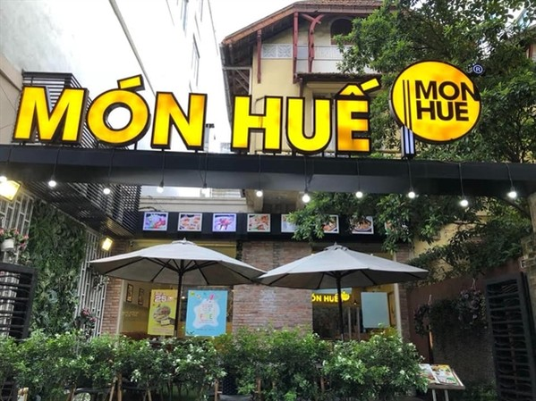
Món Huế
Địa chỉ: 107 Nguyễn Văn Hưởng, Thảo Điền, Quận 2, TP.HCM
Giá tham khảo: 50.000 - 150.000 VND/người
Thời gian hoạt động: 09:00 - 22:00
Đánh giá tổng quan: Món Huế là một quán ăn chuyên phục vụ các
món Huế, nổi bật với các món như bún bò Huế, cơm hến, bánh
bèo, và nem lụi. Quán có không gian giản dị, thoải mái, và
luôn đảm bảo hương vị đặc trưng của ẩm thực Huế. Đây là địa
điểm lý tưởng cho những ai yêu thích món ăn miền Trung.
Quận 3
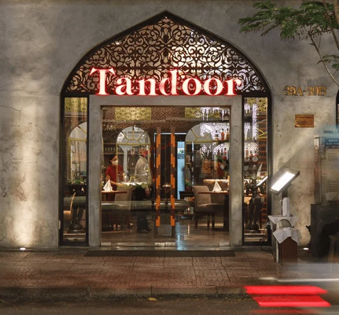
Tandoor
Địa chỉ: 74/9 Hai Bà Trưng, Phường 6, Quận 3, TP.HCM
Giá tham khảo: 250.000 - 400.000 VND/người
Thời gian hoạt động: 11:00 - 22:00
Đánh giá tổng quan: Tandoor là nhà hàng Ấn Độ nổi tiếng tại
TP.HCM, phục vụ các món ăn Ấn Độ đặc trưng như curry,
tandoori, naan, và các món ăn kèm hấp dẫn. Quán có không gian
rộng rãi, trang trí theo phong cách Ấn Độ, tạo cảm giác gần
gũi và dễ chịu. Đây là một lựa chọn tuyệt vời cho những ai yêu
thích ẩm thực Ấn Độ.
Lê La Creperie
Địa chỉ: 72 Nguyễn Thị Minh Khai, Phường 6, Quận 3, TP.HCM
Giá tham khảo: 80.000 - 150.000 VND/người
Thời gian hoạt động: 10:00 - 22:00
Đánh giá tổng quan: Lê La Creperie là quán ăn Pháp chuyên phục
vụ các loại crepe với đa dạng hương vị. Ngoài các món crepe
ngọt, quán còn có các món crepe mặn như crepe gà, crepe thịt
xông khói, và các món tráng miệng thơm ngon. Quán có không
gian ấm cúng, thích hợp cho các buổi hẹn hò hoặc gặp gỡ bạn
bè.
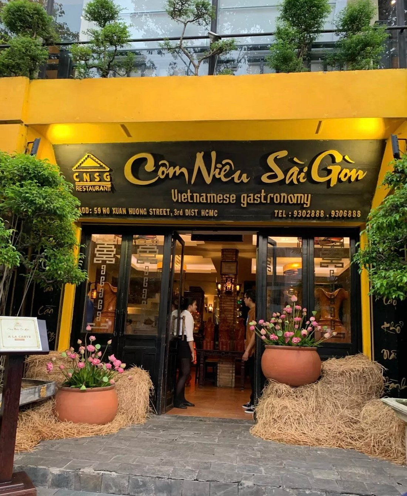
Cơm Niêu Sài Gòn
Địa chỉ: 100 Nguyễn Thị Minh Khai, Phường 6, Quận 3, TP.HCM
Giá tham khảo: 60.000 - 150.000 VND/người
Thời gian hoạt động: 10:00 - 22:00
Đánh giá tổng quan: Cơm Niêu Sài Gòn nổi bật với các món cơm
niêu đặc trưng và các món ăn miền Nam. Cơm niêu nóng hổi, được
phục vụ cùng các món mặn như cá kho tộ, thịt kho hột vịt, và
canh chua. Quán có không gian rộng rãi và thoáng mát, là lựa
chọn phù hợp cho gia đình hoặc nhóm bạn.
Quận 4
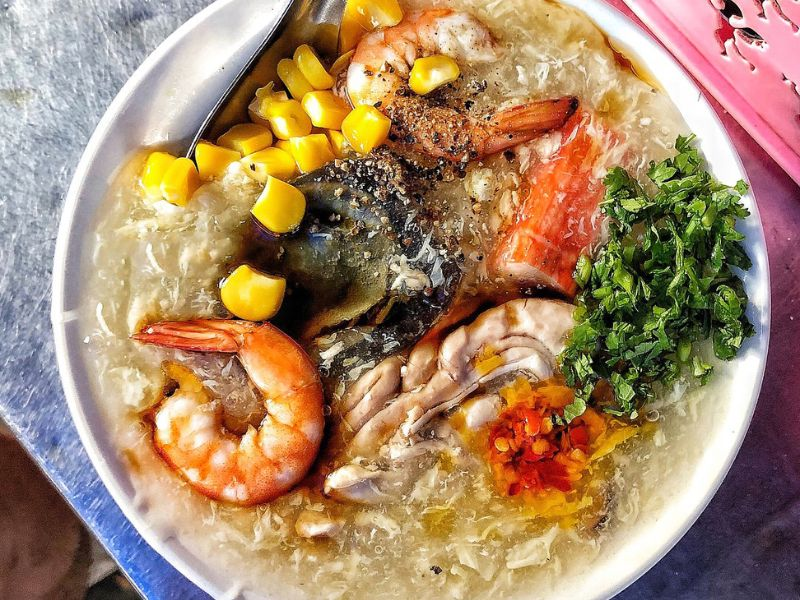
Quán súp cua Hằng
Địa chỉ: C200/18 Xóm Chiếu, phường 14, quận 4, TPHCM
Giá tham khảo: từ 10.000 - 45.000 VND/người
Giờ mở cửa: 16h00 - 21h00
Quán Súp Cua Cô Hằng là điểm đến không thể bỏ qua cho những ai
yêu thích hương vị ẩm thực Sài Gòn. Mặc dù chỉ là quán ăn bên
lề đường, nhưng chất lượng của món ăn ở đây thực sự vượt xa
mong đợi, đích thị là "không thể xem thường".
Ngoài thịt cua chất lượng, một bát súp của quán cô Hằng đều
đầy ụ các loại topping như nấm, bắp, tôm tươi, thanh cua giòn,
trứng gà ta, óc heo, trứng cút và trứng Bách Thảo. Trải nghiệm
ẩm thực tại đây chắc sẽ làm hài lòng bạn ngay từ lần đầu tiên
thưởng thức.
Đánh giá tổng quan: Cơm Tấm Cali là một trong những địa chỉ
cơm tấm ngon, với các món cơm tấm sườn nướng, bì, chả trứng,
cùng với nước mắm chua ngọt nổi tiếng. Món ăn đậm đà, chất
lượng ổn định và giá cả hợp lý.
Lẩu Bò Khu Nhà Cháy
Địa chỉ: Chung Cư Đoàn Văn Bơ, Đoàn Văn Bơ, P. 12, Quận 4, TP.
HCM
Giá tham khảo: 80.000 - 165.000 VND
Giờ mở cửa 12:00 - 23:59
Lẩu Bò Khu Nhà Cháy nổi tiếng với thực đơn phong phú, chuyên
về các món lẩu lòng bò và đặc sản miền Tây, bao gồm cả rắn và
chuột đồng, mang đến bạn những trải nghiệm ẩm thực độc đáo và
phong phú. Nồi lẩu bò ở đây, với sự kết hợp hoàn hảo của gân
bò, lòng bò, lá lách, đậu hủ, sườn bò, lá mía, khoai môn, chắc
chắn sẽ khiến bạn cảm thấy hài lòng với từng miếng ăn thơm
ngon, đậm đà.
Quận 5
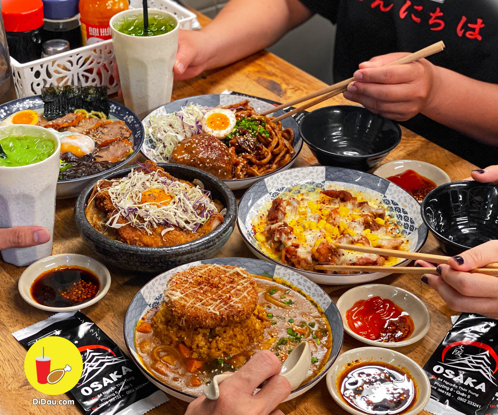
Osaka
Địa chỉ:64 Nguyễn Thời Trung, Phường 6, Quận 5, Thành phố Hồ
Chí Minh
Giá thành: Khoảng 30.000 - .000 đồng
Giờ mở cửa: 11h00-22h00 các ngày trong tuần
Những món cơm Nhật Bản với đồ ăn hấp dẫn được chế biến mới lạ
luôn thu hút, hấp dẫn giới trẻ đến thưởng thức, Osaka - cơm
thố Nhật Bản là quán ăn chuyên các món Nhật, đặc biệt là các
món cơm đặc trưng mà có thể bạn sẽ thích thú.
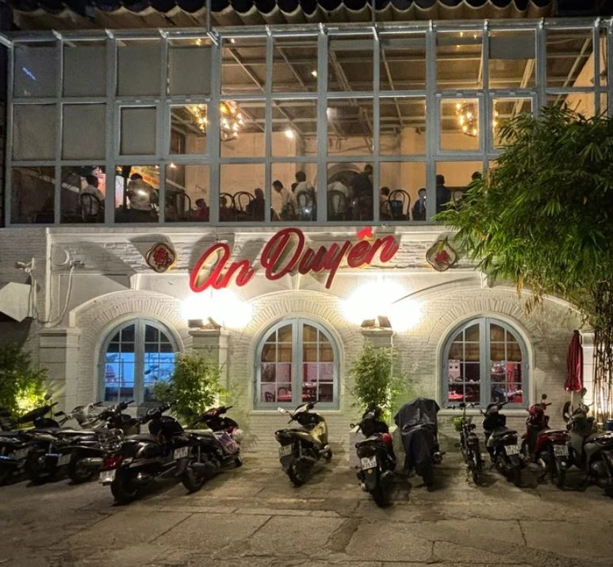
Nhà hàng Chay Bếp xanh An Duyên
Địa chỉ:10 Nguyễn Tri Phương, Phường 6, Quận 5, Thành phố Hồ
Chí Minh
Giá thành: Khoảng 30.000 - 250.000 đồng
Giờ mở cửa: 10h00-14h00, 17h00-21h30 các ngày trong
tuần(Thường đông khách lúc 19h00)
Với menu cực kỳ đa dạng các món chay, không gian đẹp, gọn
gàng, sạch sẽ cùng đồ ăn chất lượng thì nhà hàng chay Bếp xanh
An Duyên là điểm đến tuyệt vời dành cho bạn. Bạn sẽ không còn
phải lo ăn đồ chay nhàm chán, không phù hợp khi đến với bếp An
Duyên.
Vịt quay Vĩnh Phong
Địa chỉ: 527 Phan Văn Trị, Phường 7, Quận 5, Thành phố Hồ Chí
Minh
Giá thành: Khoảng 8.000đ - 350.000đ
Giờ mở cửa: 05h00 - 20h00 các ngày trong tuần
Vịt quay Vĩnh Phong là quán vịt quay không còn xa lạ với người
dân ở quận 5 với truyền thống lâu đời và nổi tiếng khắp nơi.
Với công thức ướp thịt, nướng thịt gia truyền, bạn chắc chắn
sẽ hài lòng và thích thú với những thịt vịt ở đây. Ăn kèm với
nước sốt đậm đà đúng vị cực kỳ cuốn và hấp dẫn.
Quận 6
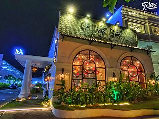
Chi Bao Dao Dimsum
Địa chỉ:97-99 Đường Lý Chiêu Hoàng, phường 10, quận 6, thành
phố Hồ Chí Minh
Giá thành: Khoảng 5.000 - 20.000 đồngBánh Cuốn Tây Hồ
Giờ mở cửa: 7h00 - 14h00 và 16h - 21h00 (Thường đông khách lúc
17h00)
Bánh Cuốn Tây Hồ
Địa chỉ: 58 Lê Quang Định, Quận 6, TP. Hồ Chí Minh
Giá: 30,000 - 50,000 VND/món
Đánh giá tổng quan: Quán bánh cuốn Tây Hồ nổi bật với món bánh
cuốn mềm mại, ăn kèm với chả lụa, nấm, và nước mắm chua ngọt.
Đây là một món ăn sáng phổ biến tại Sài Gòn. Không gian quán
đơn giản nhưng rất được lòng thực khách bởi chất lượng và giá
cả hợp lý.
Cháo Lòng Dì Cơ
Địa chỉ: 1245 Hưng Phú, Quận 6, TP. Hồ Chí Minh
Giá: 30,000 - 60,000 VND/món
Giờ mở cửa : 6h-18h
Đánh giá tổng quan: Cháo Lòng Dì Cơ là một địa chỉ nổi tiếng
với món cháo lòng thơm ngon, nước dùng đậm đà và các món ăn
kèm như lòng heo, tiết canh. Quán đơn giản nhưng rất đông
khách vào các buổi sáng, thích hợp cho bữa ăn nhanh chóng và
ngon miệng.
Quận 7
Cơm niêu Ý Việt
Địa chỉ: C26 KDC Nam Long, E8 đường Phú Thuận, phường Phú
Thuận, Quận 7, TPHCM
Nếu bạn đến Quận 7 và chưa biết thưởng thức món gì, hãy thử
ghé quán ăn cơm niêu Ý Việt. Quán này nổi tiếng với cơm niêu
thơm dẻo và thực đơn đa dạng, cho bạn nhiều lựa chọn ngon
lành. Ngoài ra, quán còn có không gian thoáng đãng và sạch sẽ,
thích hợp đi với nhóm nhiều người.
Phở Vụ - Hương vị Hà Thành
Địa chỉ: Số 172 đường Lâm Văn Bền, phường Tân Quy, Quận 7,
TP.HCM
Giá thành: Khoảng 45.000 - 75.000 đồng
Giờ mở cửa: 6h00 - 14h30 mở lại 17h30 - 21h30 (Thường đông
khách lúc 08h00)
Nếu bạn đang ở Quận 7 và muốn thưởng thức một quán phở đích
thực thì hãy ghé qua quán Phở Vụ - Hương vị Hà Thành. Quán này
phục vụ phở Bắc chất lượng cao. Bánh phở ở đây có sợi nhỏ,
dai, thịt bò tươi mềm và hương vị nước dùng đậm đà từ xương sẽ
chinh phục bạn ngay từ lần đầu thưởng thức.
Ốc Liên
Địa chỉ: 39 Lê Văn Lương, phường Tân Kiểng, Quận 7, TP. Hồ Chí
Minh
Giá thành: Khoảng 13.000đ - 100.000 đồng
Giờ mở cửa: 16h00 - 21h00 tất cả các ngày (thường đông khách
vào lúc 19h - 21h các ngày)
Quán ốc Liên, nằm gần Lotte Mart ở Quận 7, là một địa điểm
tuyệt vời để thưởng thức những món ốc đa dạng và thơm ngon. Ốc
tại quán hầu như đều còn rất tươi, chắc thịt và không bị bở.
Các loại nước sốt cũng được nấu đậm đà để làm dậy lên hương vị
đặc trưng của các món ốc.
Quận 8
Bếp Nhà
Địa chỉ:160 Phạm Hùng, Phường 5, Quận 8, Thành phố Hồ Chí Minh
Bếp nhà ấm cúng luôn dành cho mọi thực khách từ khắp các nẻo
đường đến hội ngộ. Những món ăn tại đây luôn gợi lên những cảm
giác thân thuộc, những trải nghiệm mới lạ và kèm theo một mức
giá vô cùng phải chăng.
Quán Cô Út
Địa chỉ:1216 Phạm Thế Hiển, Phường 5, Quận 8, Thành phố Hồ Chí
Minh
Giá thành: Khoảng 20.000 - 80.000 đồng
Giờ mở cửa: 6h00 - 21h00
Tới quận 8 mà thèm các món ngon của Quảng Ngãi thì không đâu
bằng quán của Cô Út đâu nè. Tại đây, bạn có thể thưởng thức
được đầy đủ các món ăn đặc trưng tại Quảng Ngãi như bánh bèo,
cơm hến, cơm gà ủ lá sen, mì quảng,... Còn đợi gì mà không rủ
bạn bè và người thân đến đây nào.
Quán Mì Cay Mosi Mosi
Địa chỉ:108 Tuy Lý Vương, Phường 13, Quận 8, Thành phố Hồ Chí
Minh
Nếu bạn là tín đồ mì cay hoặc đơn giản là thèm món mì cay thì
quán mì cay Mosi Mosi chắc chắn sẽ làm bạn hài lòng. Mì cay là
món ăn đã có từ lâu nhưng độ hot của món ăn vẫn chưa dừng lại
đặc biệt là tại quán Mosi Mosi. Ngoài mì cay, bạn có thể dùng
thêm xiên que, cơm trộn, khoai tây chiên và một số món ăn Hàn
Quốc khác nữa nhé!
Quận 9
Lẩu mắm Phong Lan
Địa chỉ:26 Long Thuận, Trường Thạnh, Quận 9, Thành phố Hồ Chí
Minh
Lẩu mắm có lẽ là món ăn quen thuộc của nhiều gia đình. Nếu bạn
có dịp đến quận 9 thì không nên bỏ qua quán Lẩu Mắm Phong Lan
nhé. Lẩu mắm tại đây được nêm nếm rất vừa vị tạo cảm giác ngon
miệng kể cả đối với những người không chịu được mùi mắm.
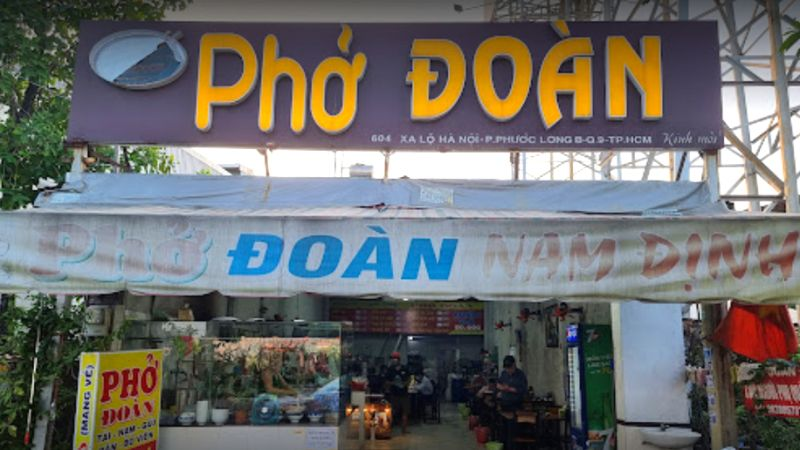
Phở Đoàn
Địa chỉ: 102 Đỗ Xuân Hợp, Quận 9, TP. Hồ Chí Minh
Giá thành: Khoảng 30.000 - 70.000 đồng
Giờ mở cửa: 5h00 - 12h00 và 17h00 - 23h00
Phở được xem là món ăn đặc trưng của Việt Nam. Nếu bạn đã đến
quận 9 thì nhất định phải ghé tới phở Đoàn để thưởng thức trọn
vẹn hương vị truyền thống món phở đậm đà nhé!
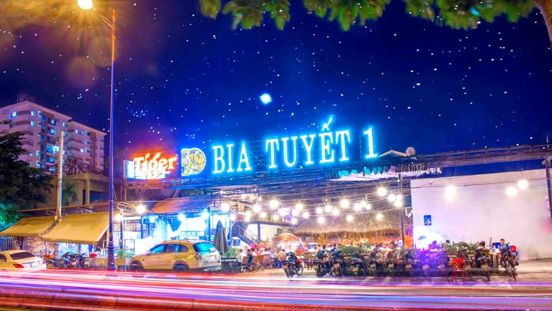
Bia Tuyết 1
Địa chỉ:632 XL Hà Nội, Khu phố 1, Quận 9, Thành phố Hồ Chí
Minh
Giá thành: Khoảng 45.000 - 300.000 đồng
Giờ mở cửa: 9h30 - 23h30
Những buổi đêm dạo mát tại quận 9 mà được cùng bạn bè nhâm nhi
dĩa mồi kèm vài ly bia hơi là hết sảy. Bia Tuyết 1 sẽ là quán
ăn làm hài lòng bạn đây, món best-seller tại đây là món tôm sú
tái Thái với thịt tôm tươi rói ăn kèm với nước sốt Thái đặc
trưng đảm bảo sẽ khiến bạn ăn mãi không ngán.
Quận 10
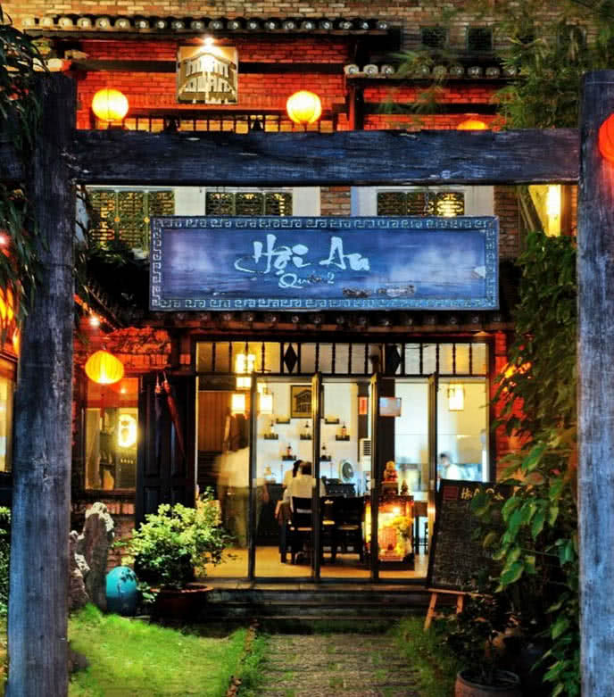
Hội An quán
Địa chỉ: 285/94A Cách Mạng Tháng 8, phường 12, quận 10,
TP.HCM.
Giá thành: Khoảng 100.000 - 220.000 VNĐ
Giờ mở cửa: 9h00 - 14h00 & 16h00 - 21h30 (Thường đông khách
vào lúc 13h00)
Hội An Quán nổi tiếng với ẩm thực đậm chất miền Trung, đem lại
cho thực khách hương vị mới lạ và giúp họ có trải nghiệm trực
tiếp văn hóa ẩm thực đặc biệt của vùng đất này. Quán đã thành
công thu hút rất nhiều thực khách ghé thăm nhờ vào sự kết hợp
hoàn hảo giữa không gian tuyệt đẹp và món ăn chỉn chu, ngon
miệng.
Bánh canh ghẹ muối ớt xanh
Địa chỉ: 484C Nguyễn Tri Phương, phường 9, quận 10, TP.HCM
Giá thành: Khoảng 45.000 - 75.000 VNĐ
Giờ mở cửa: 09h00 - 22h30
Quán bánh canh ghẹ muối ớt xanh trên đường Nguyễn Tri Phương
được bày trí rộng rãi và thoáng mát, tạo cảm giác thoải mái
cho khách hàng. Vị trí của quán dễ dàng tìm thấy, thuận tiện
cho những ai muốn thưởng thức món ăn ngon tại Quận 10.
Bún cá là một trong những món ăn nổi tiếng tại quán và hẳn là
điểm nhấn của thực đơn. Phần bún được nêm nếm với hương vị vừa
phải, tạo nên một sự cân đối hoàn hảo. Thành phần tươi ngon
như cá, rau sống, mỡ hành và các loại gia vị đặc trưng được
kết hợp một cách khéo léo, tạo nên một tô bún cá thơm ngon và
mang đậm hương vị Nha Trang.
Quận 11
Nhà hàng Bánh Canh Vua
Địa chỉ:172 Công Chúa Ngọc Hân, phường 12, quận 11, TP.HCM
Đây là một nhà hàng chuyên về các món Hong Kong với menu đa
dạng từ các món bình dân đậu hũ tứ xuyên, mì xào, hoành thánh
chiên,... cho đến các món như bào ngư. Nhà hàng bày trí các
món ăn vô cùng đẹp mắt và sang trọng. Chưa kể đến vị ngon thì
bạn đã bị quyến rũ bởi sự sắp xếp món ăn siêu hấp dẫn trên đĩa
rồi đấy.
Bánh cuốn lá dứa
Địa chỉ: 21 Nguyễn Thị Nhỏ, phường 9, quận 11, TP.HCM.
Mức giá tham khảo: 30.000 VNĐ - 50.000 VNĐ.
Giờ mở cửa: 07:00 - 22:00
Món bánh được sáng tạo từ bánh cuốn truyền thống kết hợp cùng
thành phần lá dưới được xay nhuyễn trộn với bột. Tạo ra màu
sắc bắt mắt, vị lại rất thơm mùi lá dứa đặc trưng. Bánh dai,
mềm nhân bên trong đầy ắp thịt và nấm xào chín kĩ từ
trước.Bánh ăn cùng chả các loại, bột chiên, nem, hành khô,
giá, rau cùng chén nước chấm được làm theo công thức riêng ăn
rất đậm đà.
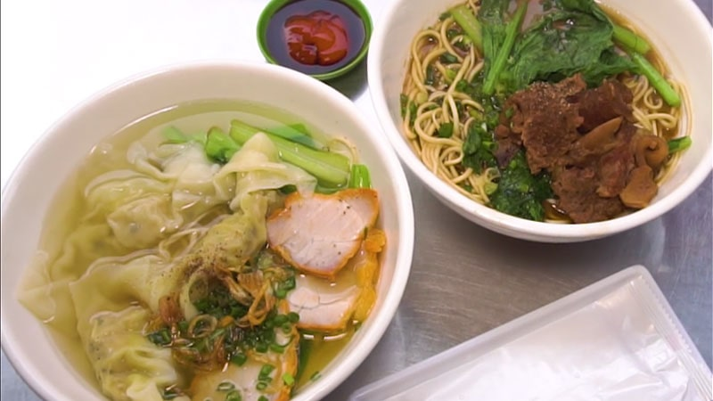
Mì kéo Kungfu Khải Ký
Địa chỉ: 116 đường Hà Tôn Quyền, Phường 4, Quận 11, TP.HCM
Giá thành: Khoảng 20.000 - 55.000 đồng
Giờ mở cửa: 7h00 - 21h00 (thường đông khách vào 11h và 17h)
Một quán mì kinh doanh nhiều năm chiếm được niềm tin từ nhiều
thực khách gần xa. Nếu đến quận 11 thì bạn nên ghé đến quán Mì
kéo Kungfu Khải Ký này để được thưởng thức từng sợi mì do
người đầu bếp khéo léo kéo và nước dùng vừa ăn, ngon miệng.
Quận 12
Bún mọc Hùng Mập
Địa chỉ: 23 Quốc Lộ 1A, Quận 12, TP. Hồ Chí Minh
Địa chỉ: 329 Nguyễn Văn Quá, Phường Đông Hưng Thuận, Quận 12,
TP.HCM
Giờ mở cửa: 8h00 - 23h00
Thưởng thức bữa sáng healthy tại quán bún mọc với không gian
rộng rãi và sạch sẽ, nơi luôn thu hút đông đảo thực khách. Tô
bún đặc biệt với sườn, mọc, mọc chiên, chả chiên và đủ loại
rau sống tươi ngon. Nước dùng vừa miệng, trong vắt, đảm bảo
đưa bạn vào một ngày mới tràn đầy năng lượng.
Lẩu Dê 404
Địa chỉ: 404 Nguyễn Văn Quá, Phường Đông Hưng Thuận, Quận 12,
TP.HCM
Giá tham khảo: 100.000 - 200.000 VND/người
Thời gian hoạt động: 10:00 - 22:00
Đánh giá tổng quan: Lẩu dê 404 nổi bật với các món lẩu dê, đặc
biệt là lẩu dê nhúng, lẩu dê xào. Thịt dê được chế biến tươi
ngon, mềm và không có mùi hôi, nước lẩu đậm đà. Quán có không
gian rộng rãi, phù hợp cho nhóm bạn hoặc gia đình, và phục vụ
nhanh chóng.
Ốc nhớ Sài Gòn
Địa chỉ: 4 Nguyễn Thị Đặng, Tân Thới Hiệp, quận 12, TP. HCM
Giá thành: Khoảng 50.000 - 150.000 đồng
Giờ mở cửa: 7h00 - 21h00
Một trong những quán nhậu tại quận 12 giá rẻ được giới sành ăn
ghé qua nhiều nhất chính là Ốc nhớ Sài Gòn. Thực đơn của quán
đa dạng với những món ăn thơm ngon, bổ rẻ rất được lòng thực
khách.
Quận Bình Thạnh
Lửa BBQ
Địa chỉ: 38 Phạm Văn Đồng, Phường 13, quận Bình Thạnh, TP.HCM
Lửa BBQ là một địa điểm lý tưởng để thưởng thức đồ nướng, lẩu
và các món ốc ngon cũng như ngắm nhìn cảnh đường phố Sài Gòn
sôi động. Với không gian rộng rãi, thoáng mát và còn có phục
vụ karaoke, đây là điểm đến hoàn hảo cho các buổi tiệc, party
hoặc vui chơi cùng bạn bè. Đội ngũ nhân viên tận tâm, thực đơn
đa dạng và giá cả hợp lý là những yếu tố khác tạo nên sự hấp
dẫn của Lửa BBQ.
Lẩu gà ớt hiểm 109
Địa chỉ: 23/2 Lê Văn Duyệt, Phường 1, quận Bình Thạnh, TP.HCM
Lẩu gà ớt hiểm 109 là một chuỗi quán ăn nổi tiếng ở Sài Gòn.
Nước lẩu tại đây có hương vị đặc trưng, đậm đà với đa dạng các
món gà nướng, gà chiên. Thêm vào đó, các món kèm như chân gà,
bánh bao chiên, xôi chiên cũng rất được khách hàng ưa chuộng.
Quán có không gian rộng rãi và nhiều combo giá tiết kiệm để
khách hàng lựa chọn. Đây là điểm đến hàng đầu nếu bạn muốn
thưởng thức bia cùng với những món gà thơm ngon và bổ dưỡng.
Bún Cá Rô Đồng Cô Hà
Địa chỉ: 281/2/22 Bình Lợi, Phường 13, Bình Thạnh, Hồ Chí
Minh.
Giá cả tham khảo: 15.000 đồng - 35.000 đồng
Giờ hoạt động: 12:30 - 23:00
Bún Cá Rô Đồng Cô Hà là một quán ăn nổi tiếng tại quận Bình
Thạnh, TP.HCM, chuyên phục vụ món bún cá rô đồng mang hương vị
Bắc Bộ. Quán sử dụng nguyên liệu tươi ngon, đặc biệt là cá rô
đồng, được chế biến thành nhiều món như cá chiên, chả lá lốt
và bắp bò non, tạo nên sự đa dạng và hấp dẫn cho thực khách.
Quận Gò Vấp
Lẩu ếch 6 Hiếu
Địa chỉ:429 Quang Trung, Phường 10, Gò Vấp, Thành phố Hồ Chí
Minh
Vào những lúc tiết trời mưa lất phất, tạo không khí lành lạnh
thì việc ngồi xung quanh một nồi lẩu nóng sẽ là một điều hạnh
phúc. Nước lẩu được chế biến đậm đà, vị chua ngọt vừa phải, ăn
chung với thịt ếch săn, chắc và một chén nước mắm mặn sẽ giúp
lòng cả cơ thể bạn cảm thấy ấm áp.
Bún Bắp Bò Quán Phương
Địa chỉ: Số 48 đường số 1, phường 7, quận Gò Vấp, TP. HCM
Mức giá tham khảo: 45.000 vnđ
Thời gian mở cửa: 06h15 - 12h00, 15h00 - 22h30
Quán nằm ngay ngã tư, có 2 mặt tiền và không gian rộng, dễ tìm
kiếm. Phục vụ đồ ăn đa dạng từ thịt bò như Bún Bò Bắp, Lẩu Bò
Nhúng Mẻ... Đồ uống đa dạng từ bia đến nước ngọt phổ biến. Tô
bún bò bắp tại quán là sự kết hợp chất lượng với thịt bò ngon,
thơm, và giòn. Nước lèo ngọt béo, ngậy. Lẩu bò đa dạng với các
món nhúng như rau củ theo mùa, nấm, thịt ba chỉ bò, đuôi bò,
bắp bò... Thực khách có thể thoải mái lựa chọn các món nhúng
tùy theo sở thích.
Bánh mì chảo 211
Địa chỉ: số 211 đường số 1, phường 11, quận Gò Vấp, TP.HCM
Mức giá tham khảo: 30.000 - 40.000 vnđ
Thời gian mở cửa: 6H30 - 10h30, chiều 16h00 - 22h00
Không gian tại quán Bánh mỳ chảo 211 mang đến cảm giác thoải
mái và ấm cúng. Đây là điểm đến quen thuộc của những người yêu
thích bánh mì chảo, không chỉ ở Gò Vấp mà còn ở khắp Sài Gòn.
Suất bánh mì chảo độc đáo với Pate, thịt bò mềm, xíu mại,
trứng ốp la, và rau thơm tươi ngon. Bánh mì luôn được phục vụ
nóng giòn, và bạn có thể thêm tương ớt hoặc sốt theo khẩu vị
cá nhân để tăng thêm hương vị.
Quận Phú Nhuận
Hủ Tiếu Mực Ông Già Cali
Địa chỉ:001 chung cư A3, Phan Xích Long, Phường 7, Quận Phú
Nhuận, Thành phố Hồ Chí Minh
Hủ Tiếu Mực Ông Già Cali có sợi hủ tiếu day mềm, nguyên liệu
tươi ngon, ngọt tự nhiên, rau ăn kèm cũng được cho kèm rất
nhiều. Món hủ tiếu mực ở đây có phần mực dai giòn và chấm cùng
nước chấm lạ miệng, nước dùng ngọt thanh, vừa miệng.
Pasta Paradise
Địa chỉ:230 Phan Xích Long, Phường 7, Phú Nhuận, Thành phố Hồ
Chí Minh
Giá thành: Khoảng 25.000 - 165.000 đồng
Giờ mở cửa: 10h00 - 22h00 từ thứ 2 đến chủ nhật
Nếu bạn muốn tìm một món ăn để đổi gió cho bữa tối thì Pasta
Paradise là lựa chọn dành cho bạn. Ở đây chuyên phục vụ các
món mì Ý thơm ngon, tuy là món u nhưng mỳ ý ở đây mang một
hương vị rất đặc trưng, rất ngon.
Bánh tráng chiên Lộc Nguyễn
Địa chỉ:174/2 Đặng Văn Ngữ, phường 14, quận Phú Nhuận, TP. HCM
Giá thành: Khoảng 12.000 - 80.000 đồng.
Giờ mở cửa: 10h00 - 21h00 từ thứ 2 đến chủ nhật.
Quán bánh tráng chiên Lộc Nguyễn là một trong những quán bánh
tráng nổi tiếng tại Phú Nhuận.Bánh tráng ở đây giòn tan được
ăn cùng với các loại topping đa dạng rất bắt miệng. Nếu bạn là
một tín đồ bánh tráng thì hãy ghé đây thưởng thức nhé!
Quận Tân Bình
Bò kho cô Mai
Địa chỉ: 6 Thăng Long, Quận Tân Bình, TP. HCM
Mức giá tham khảo: 10.000 VNĐ - 59.000 VNĐ
Giờ mở cửa: Cả ngày
Ra đời gần 25 năm, quán bò kho cô Mai là một quán ăn ngon và
chất lượng nhất nhì quận Tân Bình. Đáp ứng được các tiêu chí
ngon – bổ – rẻ cùng với công thức nấu gia truyền đã chinh phục
được nhiều thực khách dù có khó tính đến nhường nào.
Thịt bò vừa ăn, mềm vừa phải và rất thấm gia vị, nước bò kho
sánh mịn ăn cùng với bánh mì thì chỉ có thể “há hốc’ thôi nhé.
Ngoài ăn cùng với bánh mì thì hủ tiếu cũng là một sự kết hợp
tuyệt vời. Với giá chỉ vài chục cho một bữa ăn đầy đủ dinh
dưỡng cho một ngày dài hoạt động. Quán mở bán cả ngày nên bạn
có thể đến mua bất cứ lúc nào nhé.
Nhà hàng nướng Kanpai
Địa chỉ: 34 Đ. Phan Đình Giót, Phường 2, Tân Bình, Thành phố
Hồ Chí Minh
Mức giá tham khảo: 169.000 VNĐ - 269.000 VNĐ
Giờ mở cửa: 9:00 - 21:00
Nhà hàng Kanpai Buffet là một địa chỉ được nhiều người yêu
thích ở quận Tân Bình. Phục vụ dưới hình thức “Sitdown Buffet”
để bạn có thể thỏa sức thưởng thức vô vàn món ăn ngon tại các
quầy line được trưng sẵn. Với hơn 50 món ăn nướng, lẩu, đồ ăn
sẵn và nhiều loại nước khác.Không gian nhà hàng mang đậm phong
cách Nhật Bản cùng đội ngũ nhân viên được training chuyên
nghiệp. Giá cả được đánh giá là phù hợp với bữa ăn.
Quận Tân Phú
Cháo ếch Ú
Địa chỉ: 166B Gò Dầu, Tân Quý, Tân Phú, Thành phố Hồ Chí Minh
Giá thành: Khoảng 50.000đ - 60.000đ
Giờ mở cửa: 07h00 - 21h00 từ thứ 2 - chủ nhật
Cháo ếch ở đây khi được dọn ra bàn cho thực khách sẽ là những
“tuyệt phẩm” được các đầu bếp trau chuốt từng chi tiết một.
Thịt ếch được chọn là loại ếch tươi sống, được nuôi bằng thức
ăn chủ yếu là cám chắc và ngọt thịt. Bạn sẽ dễ dàng ngay lập
tức bị “chinh phục” bởi hương vị thơm ngon đúng điệu của món
ăn này đấy.
Bún Thịt Nướng Kiều Bảo
Địa chỉ: 266 Lê Trọng Tấn, Tây Thạnh, quận Tân Phú, TP. HCM
Giá thành: Khoảng 20.000 - 40.000 đồng
Giờ mở cửa: 11h00 - 21h00
Bún Thịt Nướng Kiều Bảo có lẽ là một thương hiệu không còn xa
lạ với nhiều người vì có mặt hầu hết các quận ở Sài Gòn. Dù
vậy nhưng mỗi địa điểm vẫn thu hút số lượng lớn khách hàng bởi
hương vị vẫn giữ được nét truyền thống với phần thịt đậm đà,
bát nước chấm chua ngọt vừa phải rất hấp dẫn.
Phở Quỳnh
Địa chỉ: 36 Dương Đức Hiền, phường Tây Thạnh, quận Tân Phú,
TP. HCM
Giá thành: Khoảng 20.000 - 31.000 đồng
Giờ mở cửa: 6h00 - 21h00
Một tô phở tại quán có rất nhiều thịt, nước phở vô cùng đậm
đà. Đối với rau và gia vị và có thể gọi thêm thoải mái. Ngoài
các món phở, Phở Quỳnh còn có nhiều món ngon khác như phở bò,
phở gà, miến gà,…Thêm vào đó, nhân viên của quán cũng phục vụ
khách hàng rất nhiệt tình và nhanh chóng đồng thời quán cũng
hỗ trợ giao hàng tận nơi.
Thành phố Thủ Đức
Phố nướng F2
Địa chỉ: Số 27F2 Công Lý, Phường Bình Thọ, TP Thủ Đức
Giá dao động: 50.000 - 200.000 đồng/người
Giờ mở cửa: 15h00 đến 23h00 từ thứ hai đến chủ nhật
Phố nướng F2, hay còn gọi là Phố Lẩu Soju, là nơi chuyên phục
vụ lẩu và các món nướng với thịt bò là nguyên liệu chính. Điểm
đặc biệt khiến nhiều thực khách say mê địa chỉ này chính là
nước chấm chuẩn vị Hàn. Bên cạnh đó, Phố nướng F2 còn phục vụ
các món ăn vặt Hàn Quốc và Thái.
Nhà hàng Sesan
Địa chỉ:14 Einstein, phường Hiệp Bình Chánh, quận Thủ Đức, TP.
HCM
Giá thành: Khoảng 50.000 - 220.000 đồng
Giờ mở cửa: 8h00 - 22h30 từ thứ 2 đến chủ nhật (thường đông
khách vào khoảng 19h)
Nhà hàng Sesan có không gian rộng rãi, thoải mái và nhiều cây
xanh. Nhà hàng có cả không gian ngồi ngoài trời thoải mái và
có cả phòng tiệc. Nhân viên tại đây lịch sự, dễ thương và đặc
biệt là rất nhiệt tình. Ngay cả nhân viên bảo vệ trông xe cũng
được đánh giá là rất chu đáo và hướng dẫn khách đỗ xe tận
tình.
2 Đô quán
Địa chỉ:15 đường số 4, khu phố 4, phường Hiệp Bình Chánh, quận
Thủ Đức, TP. HCM
Giá thành: Khoảng 30.000 - 150.000 đồng
Giờ mở cửa: 14h00 - 2h00 từ thứ 2 đến chủ nhật (thường đông
khách vào khoảng 20h)
Nếu bạn đang tìm một quán nhậu ở Thủ Đức có không gian thoáng
mát, giá cả phải chăng thì không nên bỏ qua quán nhậu 2 Đô
quán nhé. Quán có thực đơn đa dạng cho bạn thoải mái lựa chọn.
Tuy là quán nhậu bình dân nhưng chất lượng món ăn cũng rất
tuyệt và nên thử nhé!

.jpg)